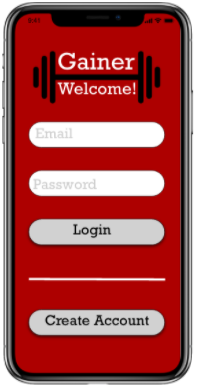
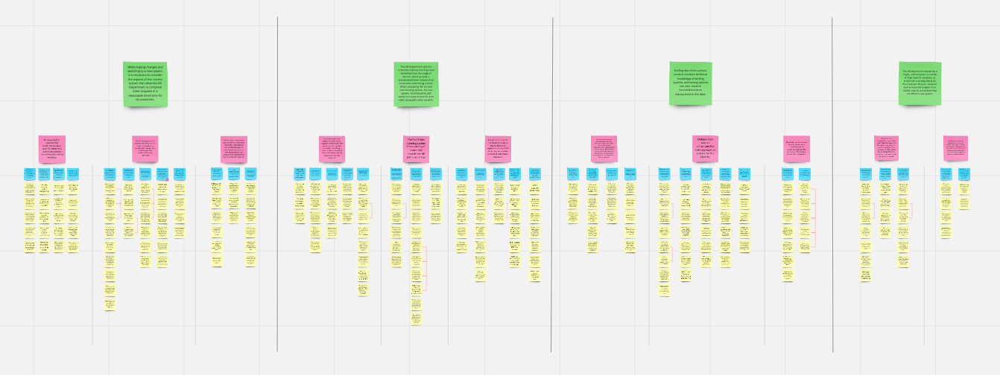

Hello!
I’m a master’s student at the University of Michigan School of Information, concentrating in UX. With a background in economics and entrepreneurship, I’m passionate about designing inclusive and enjoyable experiences. Check out my work below!
Projects
Gainer

Research, UX Design, Interaction Design
My first time designing a digital interface! I designed a mobile app that facilitates health weight gain in underweight individuals.
See Project
The University of Michigan - School of Dentistry - Human Resources Department

UX Consulting, UX Research
Matched with a local client, I conducted contextual inquiry interviews and UX research to provide recommendations to improve their information retrieval system.
See Project